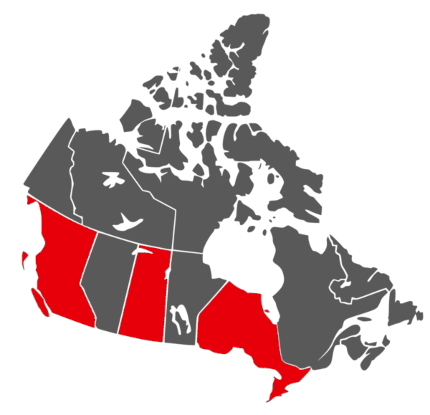

Nintendo's latest console builds upon its predecessor, creating a seamless transition from TV to
handheld play!
Using the included dock and revolutionary detachable Joy-Cons, you can easily switch back
and
forth from a solo experience to a group one with family and friends.
No TV? Flip the back stand up to play in Tabletop mode!
The Nintendo Switch also comes in a budget-friendly handheld-only version, the Nintendo
Switch
Lite, with its own set of vibrant colours.
Looking for more? The Nintendo Switch OLED model features a 7-inch OLED screen, a built in
LAN
port, and more storage!
The Nintendo Switch supports:
- An expanding library of games
- Up to 8 paired Joy-Con controllers
- Bluetooth audio pairing
- amiibo figures


Nintendo Switch Models Available Now
| Model | Features | Storage | Price |
|---|---|---|---|
| Nintendo Switch |
|
32GB | $299.99 |
| Nintendo Switch - OLED |
|
64GB | $349.99 |
| Nintendo Switch Lite |
|
32GB | $199.99 |
Map of Distributors
